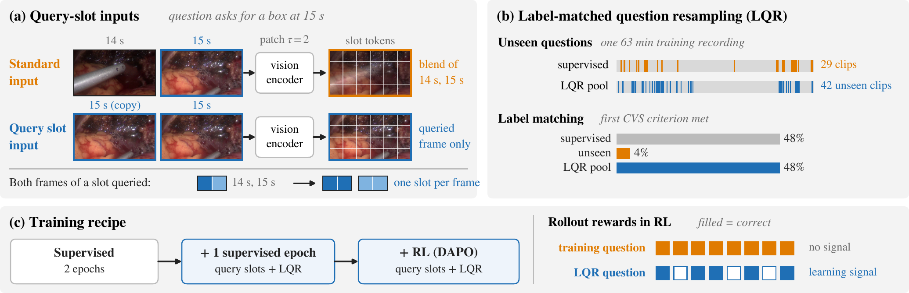
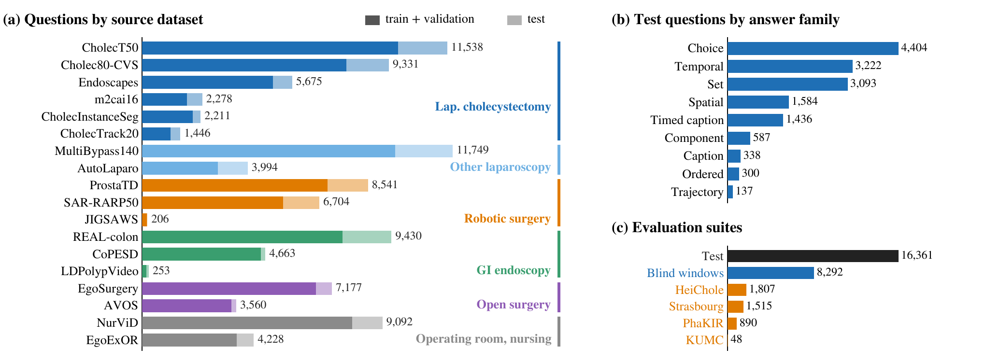
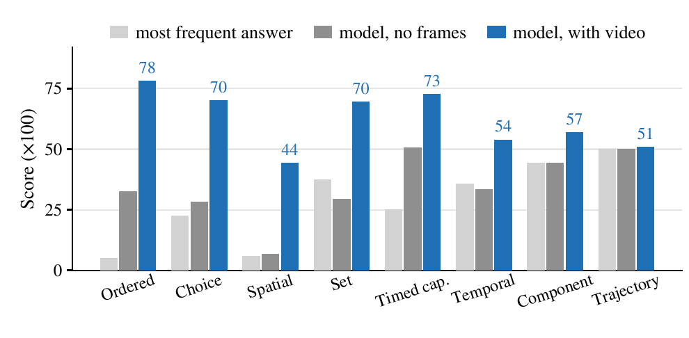
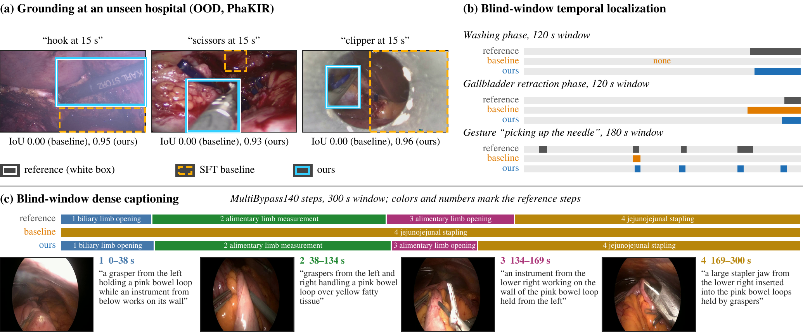
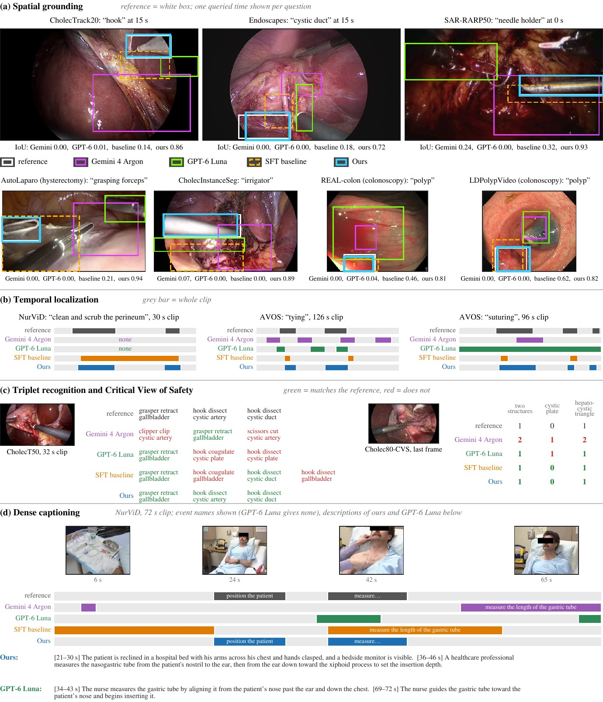
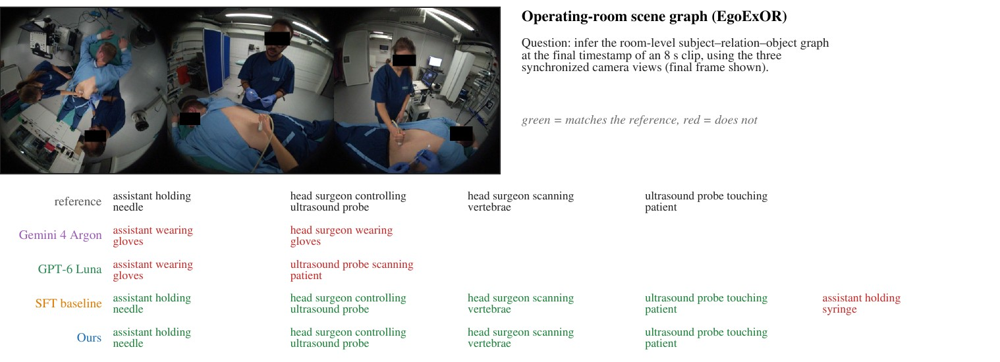

A medical video language model should answer from the visual evidence its question asks about. We find three places where this breaks down and address each with an approach we call MedEvidU. First, benchmarks reward answers that ignore the video: on one dataset, the position of a clip within its recording predicts the surgical step in 37% of questions, and a constant answer beats every trained model on a standard safety-assessment metric. We build MedVidBench-v2, 34 tasks from 18 surgical and clinical video datasets, in which prompts and metrics are audited with answers given without video, and which tests unseen hospitals and windows cut blindly from whole recordings.
Second, common video encoders merge consecutive frames into shared tokens, so a question about one frame is answered from a blend of two. Query-slot inputs give each queried frame its own tokens at almost no extra cost.
Third, a fine-tuned model has memorized its training questions, which leaves little to learn from. Label-matched question resampling (LQR) adds unseen questions about the same recordings while keeping the answer distribution fixed, in a final supervised epoch and in reinforcement learning.
Together, these raise the grounding IoU of a 4B model from 30.4 to 44.4, above a supervised 27B model, and instrument grounding at an unseen hospital from 33.9 to 72.5. On blindly cut windows, event-presence accuracy improves by 5.5 points and localization F1 by 8.1 points.
Three failure points, and what we do about each
none.Query-slot inputs and LQR enter a final supervised epoch and reinforcement learning

(a) Query-slot inputs fill the queried frame's token slot with that frame; a slot with two queried frames is split. (b) LQR draws unseen questions from the training recordings and matches their label distribution. (c) Both enter the final supervised epoch and reinforcement learning (DAPO), whose rewards come from the audited benchmark metrics.
A medical video benchmark built so that a score requires the video

(a) Questions per source dataset, colored by clinical domain. (b) Headline test questions per answer family. (c) Curated test, blind-window, and unseen-hospital suites.
Leaking context is removed, every recognition question lists the full label vocabulary, trajectories are scored with class-balanced accuracy, and event presence is reported separately from localization. Labels and caption references are checked against the frames.
Curated clips reveal where events are. The blind-window test tiles whole test recordings with fixed-length windows from a random offset, as a deployed system would, so the model must decide whether an event occurs before saying where.

Video dependence per family: the final 4B model with and without frames, and the most frequent training answer.
Against a baseline with equal supervised training (Qwen3.5-4B)
| In-distribution | Blind windows | Unseen hospitals (OOD) | |||||||||||||||
|---|---|---|---|---|---|---|---|---|---|---|---|---|---|---|---|---|---|
| Model | Temp. | Spat. | Choice | Set | Ord. | Comp. | Traj. | T-cap | Caption | Pres. | Loc. | Bound. | Ch.HC | SetHC | SetStr | Sp.KU | Sp.PK |
| Answers that ignore the video | |||||||||||||||||
| Always “none” | 35.9 | 0.0 | 0.0 | 7.6 | 0.0 | 0.0 | 0.0 | 0.0 | – | – | – | – | – | – | – | – | – |
| Most frequent answer | 35.9 | 5.9 | 22.7 | 37.6 | 5.1 | 44.4 | 50.0 | 25.3 | – | – | – | – | – | – | – | – | – |
| Final model, no frames | 33.4 | 6.7 | 28.2 | 29.5 | 32.6 | 44.4 | 50.0 | 50.7 | – | – | – | – | – | – | – | – | – |
| Best video-free answer | – | – | – | – | – | – | – | – | – | 50.0 | 0.0 | 36.5 | 31.0 | 17.5 | 48.5 | 3.2 | 17.4 |
| Reference models (one-shot) | |||||||||||||||||
| InternVL3.5-8B | 16.6 | 7.1 | 26.1 | 24.5 | 5.1 | 34.5 | 31.9 | 6.1 | 46.8 | 53.9 | 14.1 | 12.6 | 22.7 | 40.0 | 27.6 | 14.2 | 13.6 |
| Hulu-Med-7B | 33.5 | 4.1 | 23.3 | 27.3 | 1.5 | 35.9 | 27.7 | 1.7 | 48.4 | 50.3 | 0.0 | 0.0 | 26.8 | 50.5 | 48.7 | 0.2 | 15.9 |
| MedGRPO-4B | 18.5 | 21.0 | 26.2 | 29.5 | 5.5 | 46.0 | 29.7 | 50.7 | 52.0 | 61.1 | 34.2 | 46.6 | 18.2 | 50.6 | 43.1 | 23.6 | 30.1 |
| Qwen3.5-4B | 35.6 | 6.6 | 26.7 | 23.6 | 9.5 | 36.5 | 29.3 | 11.9 | 54.1 | 67.5 | 24.2 | 21.0 | 15.6 | 53.6 | 39.7 | 9.5 | 8.8 |
| Qwen3.8-27B | 17.4 | 20.3 | 29.2 | 32.9 | 16.9 | 45.0 | 43.3 | 37.8 | 53.5 | 56.3 | 40.0 | 34.7 | 21.3 | 53.8 | 44.2 | 26.6 | 27.0 |
| Gemini 3.8 Flash | 32.8 | 9.7 | 22.7 | 29.8 | 21.8 | 42.4 | 32.2 | 35.3 | 58.9 | 53.4 | 15.8 | 19.9 | 26.0 | 41.5 | 41.4 | 17.9 | 13.9 |
| Gemini 4 Argon | 32.4 | 14.9 | 24.8 | 31.5 | 21.3 | 40.1 | 50.0 | 38.2 | 53.8 | 53.3 | 7.6 | 6.8 | 22.8 | 39.8 | 38.0 | 11.7 | 21.4 |
| GPT-6 Luna | 26.7 | 23.8 | 38.0 | 39.9 | 34.1 | 50.9 | 44.3 | 41.3 | 60.6 | 69.2 | 46.8 | 45.5 | 48.9 | 56.1 | 53.1 | 36.8 | 37.0 |
| Qwen3.5-4B trained on MedVidBench-v2 | |||||||||||||||||
| SFT baseline | 53.3 | 30.4 | 70.4 | 68.8 | 78.6 | 55.5 | 48.8 | 70.1 | 73.9 | 81.2 | 49.6 | 59.0 | 61.6 | 59.8 | 63.7 | 33.3 | 33.9 |
| + QS, LQR | 55.2 | 42.0 | 69.7 | 70.3 | 78.9 | 57.8 | 48.1 | 70.7 | 73.9 | 82.7 | 50.3 | 59.5 | 62.4 | 59.2 | 67.3 | 33.5 | 72.2 |
| + RL | 54.0 | 44.4 | 70.1 | 69.7 | 78.2 | 57.1 | 51.1 | 72.7 | 75.0 | 86.7 | 57.7 | 65.3 | 63.5 | 59.1 | 67.5 | 38.9 | 72.5 |
| Qwen3.8-27B trained on MedVidBench-v2 | |||||||||||||||||
| SFT baseline | 55.8 | 42.7 | 71.8 | 70.4 | 77.3 | 54.4 | 48.2 | 72.1 | 74.0 | 83.1 | 56.2 | 61.4 | 63.0 | 58.0 | 65.7 | 42.3 | 42.0 |
| + QS, LQR | 57.9 | 53.1 | 71.6 | 71.1 | 78.7 | 57.1 | 47.9 | 73.5 | 74.8 | 84.2 | 54.1 | 57.5 | 63.8 | 56.4 | 70.6 | 49.7 | 75.0 |
| + RL | 56.6 | 53.9 | 71.8 | 71.8 | 79.7 | 56.8 | 46.0 | 74.7 | 74.4 | 87.8 | 59.3 | 59.2 | 63.9 | 56.1 | 70.7 | 50.8 | 75.2 |
Scores ×100. MedVidBench-v2 test (15,101 questions), blind windows (8,292), and unseen hospitals (HC HeiChole, Str Strasbourg, KU KUMC, PK PhaKIR). QS: query slots; LQR: label-matched question resampling. Bold: block best; green: significantly above the SFT baseline (paired 95% interval; no cell is significantly below).
The final 4B model against the SFT baseline

(a) PhaKIR frames from an unseen hospital: the final model boxes the instrument at the queried time. (b) Blind windows:
it returns intervals where the baseline answers none, extends past the event, or finds one of several occurrences.
(c) Dense captioning of a blind window: it separates and describes four steps where the baseline returns one.

The SFT baseline, GPT-6 Luna, and Gemini 4 Argon on test questions. (a) Box IoU at one queried time. (b, d) Reference and predicted intervals; (d) also lists the event descriptions. (c) Items matching the reference in green, others in red.

EgoExOR, three synchronized camera views. Our model returns the four reference relations; the SFT baseline adds a relation that is not in the reference graph, and the commercial models return generic relations.
@article{gao2026medevidu,
title = {Evidence-Aligned Benchmarking and Learning for Medical Video Language Models},
author = {Gao, Zhongpai and Choudhuri, Anwesa and Zheng, Meng and Planche, Benjamin and Chen, Terrence and Wu, Ziyan},
journal = {arXiv preprint},
year = {2026}
}